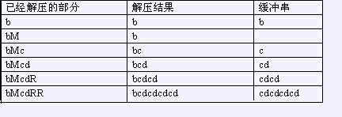

输入仅一行，包含待压缩字符串，仅包含小写字母，长度为n。
给一个由小写字母组成的字符串，我们可以用一种简单的方法来压缩其中的重复信息。压缩后的字符串除了小
写字母外还可以（但不必）包含大写字母R与M，其中M标记重复串的开始，R重复从上一个M（如果当前位置左边没
有M，则从串的开始算起）开始的解压结果（称为缓冲串）。 bcdcdcdcd可以压缩为bMcdRR，下面是解压缩的过程

另一个例子是abcabcdabcabcdxyxyz可以被压缩为abcRdRMxyRz。
输入仅一行，包含待压缩字符串，仅包含小写字母，长度为n。
输出仅一行，即压缩后字符串的最短长度。
bcdcdcdcdxcdcdcdcd
12在第一个例子中，解为aaaRa，在第二个例子中，解为bMcdRRxMcdRR。
【限制】
100%的数据满足：1<=n<=50 100%的数据满足：1<=n<=50